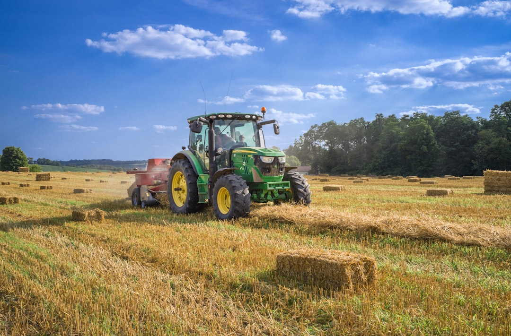

Чек-лист: Как выбрать минитрактор
Практический чек-лист

Выбор минитрактора — это не просто покупка техники, а инвестиция в эффективность работ на участке или ферме. Правильный подбор машины под конкретные задачи экономит деньги, время и нервы уже в первый сезон. Этот чек-лист поможет вам систематически оценить все ключевые параметры, от мощности двигателя до типа трансмиссии, и избежать типичных ошибок при выборе. Используйте его как навигатор перед визитом к дилеру или при сравнении моделей в каталоге.
📄 Открыть PDF версию-
Определите список работ и площадь участка
составьте перечень задач, которые планируете решать (пахота, кошение, уборка снега, перевозка грузов), и измерьте площадь в гектарах. Это основа для расчета требуемой мощности и типа машины, так как от задач зависят все остальные характеристики.
-
Выберите мощность двигателя в зависимости от типа работ
для дачи достаточно 15–25 л.с., для поля и почвообработки нужны 30–50 л.с. Дизельные двигатели экономичнее и тяговитее на низких оборотах, что критично для фрезы, косилки и снегоуборочного оборудования.
-
Проверьте реальную снаряженную массу машины с навеской
тяжелая машина обеспечивает стабильную тягу и глубокую обработку почвы, но для газона переизбыток веса вреден. Масса часто решает проблемы лучше, чем табличная мощность.
-
Оцените тип трансмиссии под ваш сценарий
механика дешевле и ремонтопригодна для полевых работ, гидростат удобнее для коммунальных задач и маневров, реверс коробки обязателен для активной навески. Количество пониженных передач важнее верхней скорости.
-
Определитесь с приводом (2WD или 4WD)
2WD годится на твёрдом грунте и газоне, 4WD необходим для пахоты, уклонов, снега и буксировки тяжелых прицепов. На межсезонье и грунтовку рекомендуется 4WD почти безоговорочно.
-
Проверьте наличие и тип кабины
кабина нужна при круглогодичной эксплуатации и коммунальных задачах, полноценные кабины ставят на машины мощнее 25–30 л.с. Жесткая кабина с отопителем и шумоизоляцией обеспечивает работу по графику, а не по погоде.
-
Убедитесь в совместимости навесного оборудования с машиной
проверьте трёхточечную навеску категории 0 или 1, тип и обороты ВОМ, требуемую мощность и вес агрегата. Несовместимость по валу, ширине захвата или гидровыходам приведёт к неэффективности.
-
Оцените количество гидравлических выходов
два гидровыхода позволяют подключать несколько агрегатов одновременно, что повышает производительность. Один выход ограничивает функциональность и требует переподключения при смене навески.
-
Проверьте доступность сервиса и запчастей в вашем регионе
откройте капот и проверьте доступ к масляному фильтру, топливному отстойнику, ремням и радиатору. Сложный доступ означает дорогое обслуживание и долгие простои в сезон.
-
Изучите типовые неисправности и цены на расходники
узнайте артикулы патрубков, ремней, датчиков и фильтров, сроки поставки запчастей. Мелочи вроде ремней часто становятся причиной простоев, поэтому лучше иметь минимальный запас.
-
Сравните новый минитрактор с гарантией и б/у вариант
новый предсказуем по ресурсу и имеет гарантию, б/у дешевле, но рискован по скрытым дефектам в гидравлике и коробке. Считайте стоимость владения за 2–3 сезона, а не только входную цену.
-
Рассчитайте полную стоимость владения, включая навеску и доставку
реальная сумма включает комплект колес, базовый набор навески, ПТС, доставку, пуско-наладку и расходники на первый сезон. Не считайте только ценник на шасси.
-
Проверьте качество рамы и мостов перед покупкой
попросите поднять машину на подхвате и осмотрите швы, усиления и состояние осей. Стальная рама без сомнительных тонких усилителей — признак надёжности и долговечности.

Что важно помнить
Подавляющее большинство проблем приходит не от дефицита мощности, а от неправильной массы и невпопад подобранной навески. Отталкивайтесь от задач, а не от красивых фото и топовых кнопок на панели.
Универсальных минитракторов без компромиссов не бывает. Делите выбор по сценарию: компакт для дачи, сельхоз класс для поля, промежуточные универсальные решения для круглогодичной работы с частой сменой навески.
При ограниченном бюджете экономьте на опциях, но не на шасси, массе, качестве резины и фильтров. Новый минитрактор с гарантией часто выгоднее б/у без понятной истории, особенно на старте.